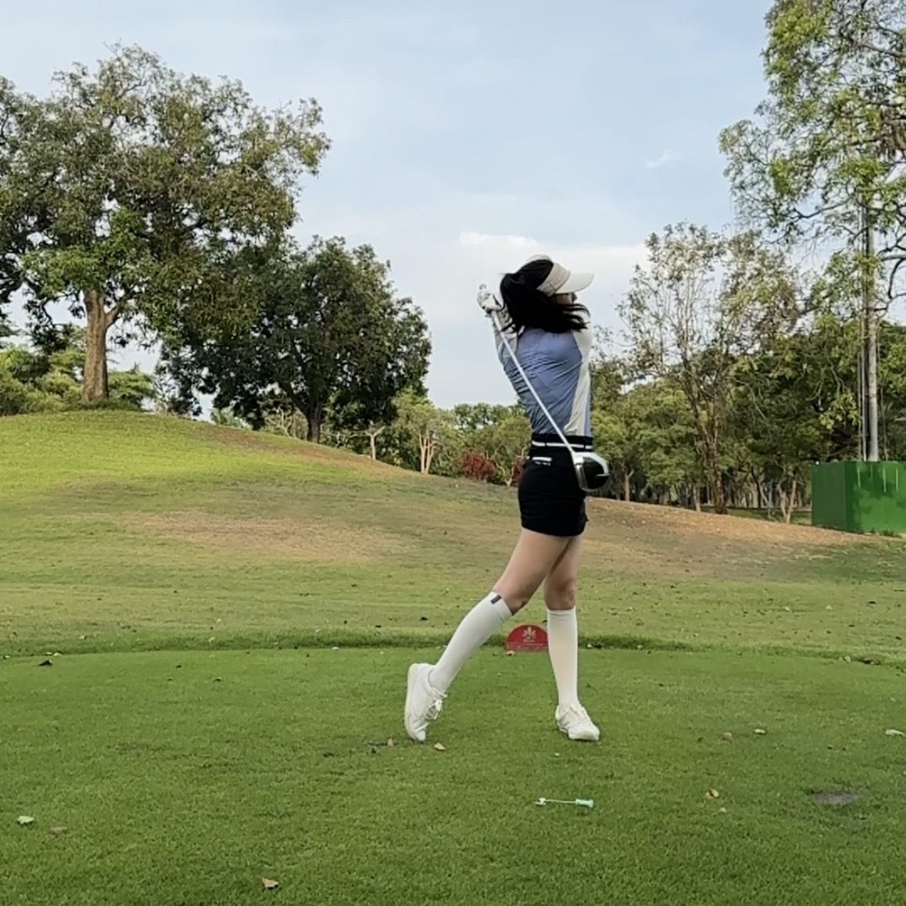

Hobbies & Interests
A glimpse into my personal passions
Beyond my professional life, I nurture a variety of interests that keep me inspired and balanced. Click on any hobby below to see a special animation!

Photography üì∑

Foodie üç¥

Golf ⛳️

Travel üó∫Ô∏è

Cat Mom üêà